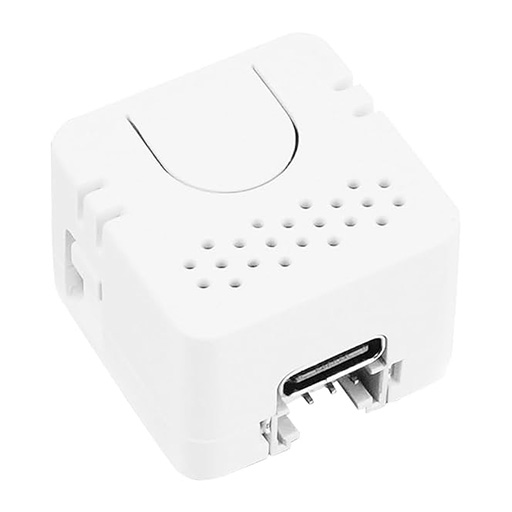
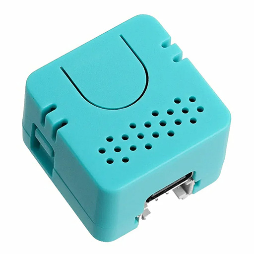
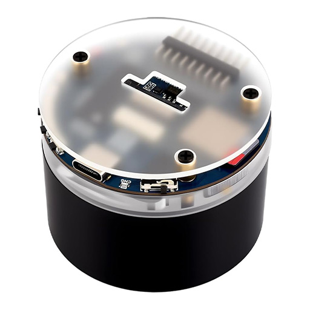
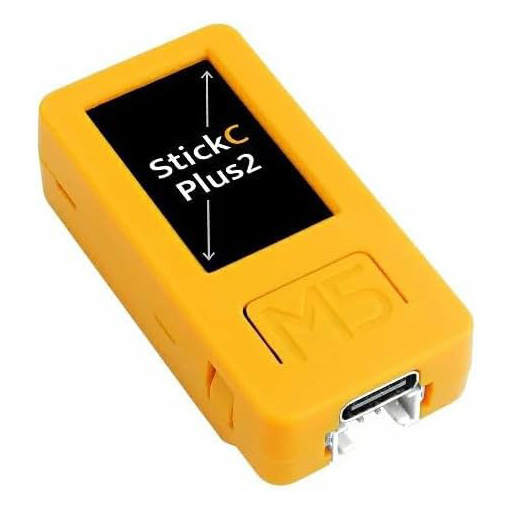

Flash your ESP32 device with the audio-reactive firmware for use with Aqara Advanced Lighting. Connect your device via USB and click Install.

Built-in PDM microphone, status LED, USB-C

ES8311 codec, speaker feedback, ESP32-S3, USB-C

ES7210 dual mic, ESP32-S3, 7-LED ring, battery, USB-C.

Built-in PDM mic, screen, battery, USB-C.
Note: After flashing, the installer will prompt you to enter your Wi-Fi credentials. The device will then appear in Home Assistant automatically.
ESP32-S3 devices (S3R, Waveshare): If the installer can't connect, hold the BOOT button while plugging in the USB cable, then click Install.
If you prefer to compile yourself or need a custom configuration, see the README for ESPHome external component setup.